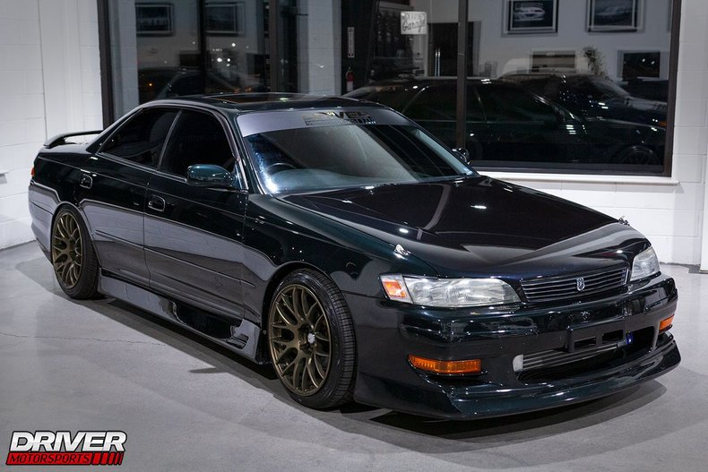
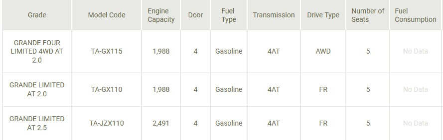

Toyota Mark II

The Toyota Mark II, known as the Toyota Corona Mark II before 1972, is a compact sedan produced by Toyota from 1968 to 2004. In certain markets, it was sold as the Toyota Cressida from 1976 to 1992. Manufactured in Japan, the Mark II/Cressida was a rear-wheel-drive sedan that gained popularity globally. It was eventually succeeded by models like the Avalon in North America.
